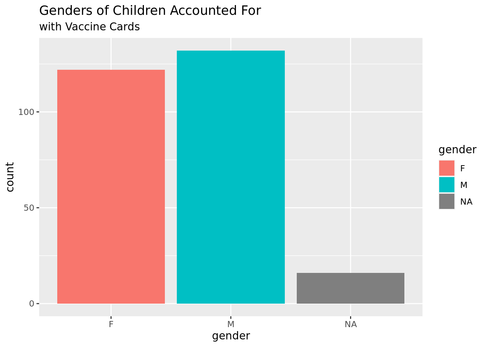

library(readr)Consolidated_QUANT_Vax_Cards <-read_csv("Consolidated QUANT Vax Cards (no refuerzos, flu, vitA, varicella) - A+B Vax Cards MINUS Refuerzos, HepBs, Varicella.csv", col_types =cols(date =col_date(format ="%d-%m-%y"), dob =col_date(format ="%d-%m-%Y")))#View(Consolidated_QUANT_Vax_Cards)
# frequency tableConsolidated_QUANT_Vax_Cards |>count(gender) |>mutate(prop = n/sum(n))
# A tibble: 3 × 3
gender n prop
<chr> <int> <dbl>
1 F 122 0.452
2 M 132 0.489
3 <NA> 16 0.0593
# bar chartConsolidated_QUANT_Vax_Cards |>ggplot(aes(x = gender, fill = gender)) +geom_bar() +labs(title ="Genders of Children Accounted For", subtitle ="with Vaccine Cards")

# pie chartslices <-c(122, 132, 16)labels <-c("Female", "Male", "Unknown")percent <-round(slices/sum(slices)*100)labels <-paste(labels, percent)labels <-paste(labels,"%",sep="") pie(slices, labels = labels, col =rainbow(length(labels)), main ="Pie Chart of Genders Survyed (with Vaccine Cards)")